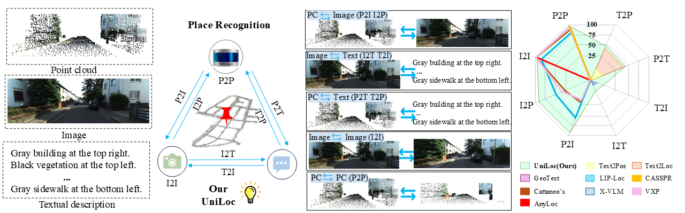
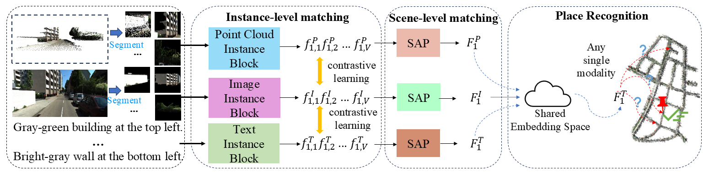

Abstract
To date, most place recognition methods focus on single-modality retrieval. While they perform well in specific environments, cross-modal methods offer greater flexibility by allowing seamless switching between map and query sources. It also promises to reduce computation requirements by having a unified model, and achieving greater sample efficiency by sharing parameters. In this work, we develop a universal solution to place recognition, UniLoc, that works with any single query modality (natural language, image, or point cloud). UniLoc leverages recent advances in large-scale contrastive learning, and learns by matching hierarchically at two levels: instance-level matching and scene-level matching. Specifically, we propose a novel Self-Attention based Pooling (SAP) module to evaluate the importance of instance descriptors when aggregated into a place-level descriptor. Experiments on the KITTI-360 dataset demonstrate the benefits of cross-modality for place recognition, achieving superior performance in cross-modal settings and competitive results also for uni-modal scenarios. The code will be available upon acceptance.
Approach
UniLoc architecture: To the best of our knowledge, our approach, UniLoc, is the first place recognition solution that exhibits any single modality (text, image, or point cloud). Here shows the pipeline of our UniLoc. Given a triplet consisting of text descriptions, a single image, and the corresponding 3D submap, we first align the image with the point cloud and the image with the text at the instance level. Next, we aggregate the instance-level descriptors into a place-level representation. Through this two-level alignment pipeline, we achieve the integration of descriptive information from three modalities into a shared embedding space. This enables cross-modal retrieval between any two modalities, allowing UniLoc to perform place recognition using any single modality.
Examples
BibTeX
tbd